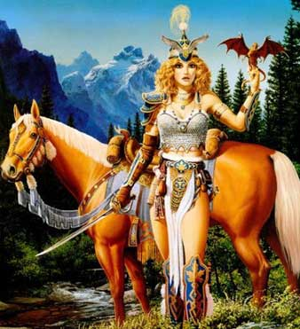

Difensori della Fede di Loky
Nota di gioco: I difensori della fede di Loky si devono considerare della classe warrior - paladin (Player's Handbook) ed utilizzano quel sistema di punti esperienza.
I
Difensori della fede sono uomini o donne dotati di particolari doti mentali e
fisiche, che hanno sopportato il sacrificio di un intenso allenamento e training
la cui durata supera i quattro anni nei quali si esercitano nella arti della
guerra e nello studio della teologia .
I Difensori della fede utilizzano le loro doti e i
loro poteri per aiutare il culto di Loky.
Nella loro vita e nelle loro azioni i paladini del culto di Loky rispettano un difficile codice comportamentale.
I Difensori della fede indossano sfarzose corazze dello stile che era usato nel periodo dello splendore dell'Impero del Nordor, i loro colori dominanti sono l'oro e il blu. Caratteristico inoltre il pennacchio giallo chiaro sui loro elmi. Queste corazze hanno un costo del 50% superiore rispetto a quelle normali di fattura del Sud-Arelia che nei loro confronti sono assai spartane, questo li rende molto visibili e riconoscibili all'interno degli Stati del Sud.

Il
Difensore della fede nella sua vita deve rispettare sette
virtù fondamentali che implicano relative decisioni e scelte:
1)
Tranquillità
Per rispettare questa virtù il paladino deve rimanere sempre sereno e tranquillo, gli è proibito adirarsi e dare in qualsiasi forma di escandescenze. Il Difensore della Fede deve anche nei momenti critici mantenere la calma e aiutare coloro che lo circondano a fare altrettanto. Il paladino deve combattere in ogni modo le scene di panico e di furia. Quando si è in panico si perdono i lumi della ragione e non si mantiene la fondamentale chiarezza di idee necessaria per prendere ogni decisione. Inoltre sempre per questa virtù il paladino non deve farsi agitare da offese, insulti e non deve accettare provocazioni di sorta.
2)
Onestà
Il paladino deve essere onesto, sempre e ad ogni costo. Per questa virtù deve sempre essere sincero e non dire bugie. Non deve imbrogliare gli altri e truffarli, anche a fin di bene, il paladino stima tutti gli esseri viventi e li considera capaci di apprendere sempre la verità per quanto questa possa essere dura e triste. Il paladino inoltre farà in modo di rispettare e far rispettare le leggi della comunità e le leggi straniere , solo quando queste siano palesemente ingiuste potrà chiudere un occhio sul rispetto delle stesse da parte degli altri ma lui cercherà comunque di rispettarle, se va in conflitto con le leggi di un luogo in cui non è costretto a stare, vorrà dire che andrà via invece che restare e non rispettare leggi ingiuste.
3)
Onorevolezza
In ogni sua azione il paladino si deve comportare in maniera onorevole , il paladino di Loky è uno spirito guida della società , deve cercare la fama , la gloria e il rispetto degli altri . La sua vita è votata al benessere della comunità , per questo il paladino deve mantenere una vita degna di stima e rispetterà le decisioni della comunità per quanto possano essergli congeniali o meno . Mai un paladino si comporterà in modo disonorevole, per questo rispetterà in gran parte il codice di comportamento dei cavalieri con le loro regole . Chi colpisca il suo onore deve essere punito , ma la vendetta personale e la violenza non dovranno essere usate , dovrà piuttosto agire e dimostrare nella pratica a tutta la omunità che chi mente non è lui ma colui che lo copre di infamia .
4)
Carità
Il Difensore della Fede agirà con spirito
caritatevole, per ciò aiuterà coloro che si troveranno in stato di bisogno o
in difficoltà, farà donazioni per fini elevati e darà cibo ai poveri e riparo
agli emarginati. Darà ospitalità nella sua dimora e non mancherà di
programmare tempo e fondi per progetti socialmente elevati.
5) Pietà
Fondamentale virtù del paladino di Loky è mostrare
pietà, quando sconfigge un qualsiasi nemico il paladino non lo ucciderà e farà
in modo che costui se è possibile continui a vivere per potersi mettere sulla
retta via e redimersi. Il paladino disdegna tutti coloro dimostrano di non avere
pietà degli altri. Il Difensore della fede deve essere capace di perdonare
sempre , ciò non vuol dire che si fa prendere in giro, se si accorge che lo si
sta solo utilizzando potrà agire in maniera tale da sistemare le cose per
evitare ai nemici di fare danni. Principio cardine per rispettare questa virtù
è rispettare la vita in generale,
ogni volta il paladino si sforzerà di trovare soluzioni alternative a quella di
dare la morte ai propri nemici , potrà rinchiuderli , renderli inoffensivi, ma
eviterà di distruggerli o ammazzarli. Color che provano pietà e perdonano i
nemici che si sono macchiati dei più efferati crimini potranno avanzare fieri
nella luce di Loky. Un paladino per questo motivo non lascerà feriti sul campo
di battaglia ma cercherà di curarli e portarli in salvo anche a costo di
perdere tempo utile per i suoi scopi. Queste regole si utilizzano solo per gli
esseri intelligenti.
6)
Coraggio
Il paladino di Loky deve affrontare la vita con
coraggio , coraggio non significa spavalderia o spregiudicatezza ma ogni
guerriero della fede deve rischiare quando è il momento la propria vita per
fini superiori . Questa virtù deve essere letta anche contro gli eccessi , nel
senso che mai un paladino affronterà situazioni che apparentemente lo vedono sconfitto . Sarebbe solo un sacrificio
inutile , meglio abbandonare per continuare a fare del bene dopo . La vita non
è paladino ma è di tutta la comunità . I poteri che gli sono concessi non
sono personali ma sono una dimostrazione su Arelia della potenza del Dio della
Gloria .
7)
Giustizia
Nelle sue scelte il paladino deve essere giusto, per
il paladino di Loky tutti i membri della comunità sono uguali e tutti gli
esseri intelligenti vanno trattati alla stesso modo. Non si comporterà mai in
maniera tale da discriminare una persona su un’altra ma le sue scelte dovranno
sempre essere imparziali. Non dovrà mai
avvantaggiare un amico, un parente,
un superiore, o un conoscente, per ogni cosa. Dovrà sempre valutare le sue
scelte nella maniera più oggettiva
possibile. Combatterà la corruzione e le raccomandazioni, tutti devono partire
ad armi pari e nel rispettare questa virtù si rifiuterà di combattere nemici e
persone che non sono in grado di difendersi efficacemente. Crede nella lotta ad
armi pari e non utilizzerà incanti o latro se ciò squilibrerebbe troppo lo
scontro.
A ) Guardie del Culto di Loky che a loro volta si dividono in :
- Guardia del Culto di Loky ( livello 1° e 2° di esperienza )
-
Alta Guardia del Culto di Loky (
livello 3° e 4° di esperienza )
- Somma Guardia del Culto di Loky ( livello 5° e 6° di
esperienza )
Costoro devono dedicare 120 giorni ogni anno servendo
presso una Saggia Amministrazione, sarà l’Anziano maestro a stabilire il
loro compito o presso quale confraternita dovranno andare , di solito li metterà
agli ordini di un Gran Chierico .
B)
Spade
della Fede ( dal 7° livello in poi )